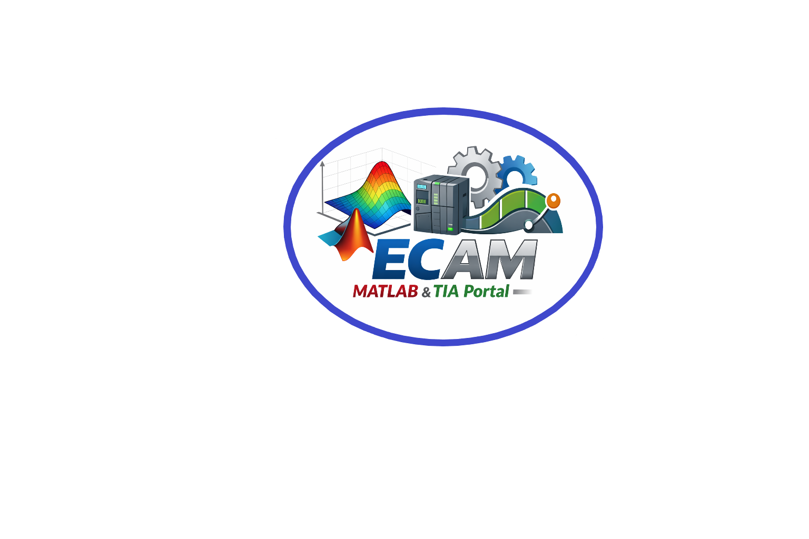

Implementazione di camma elettronica nel revamping di macchine per l’industria cartaria
VALMET Tissue SPA - E.FERMI - G.GALILEI presentano : Progettare una camma elettronica utilizzando MATLAB e TIA Portal per l'implementazione su PLC Siemens